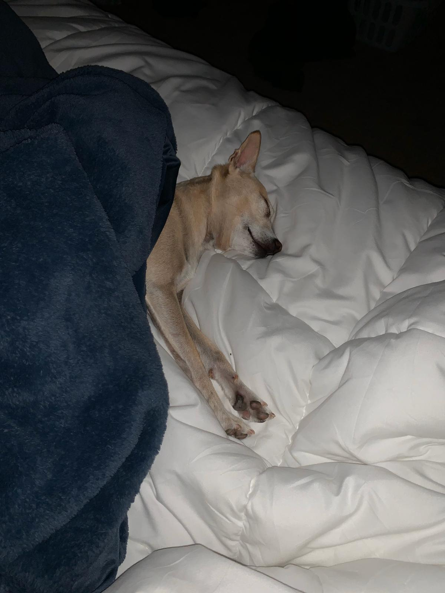
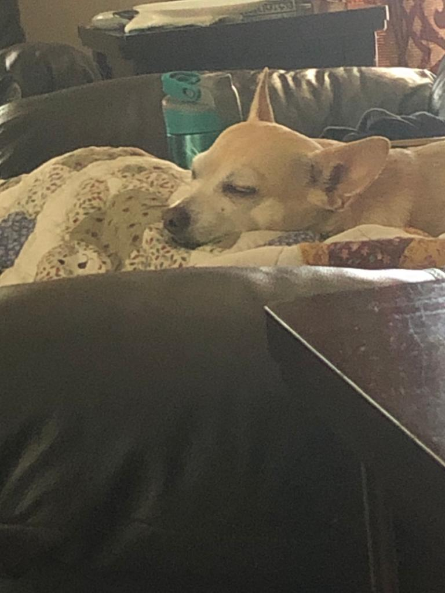
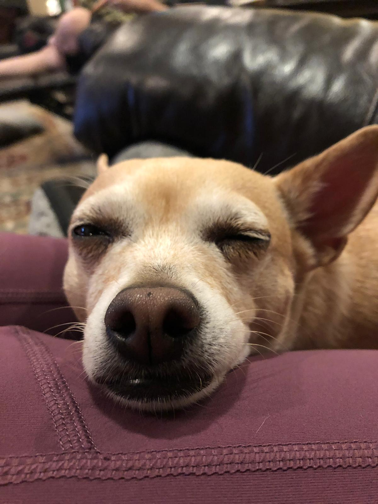
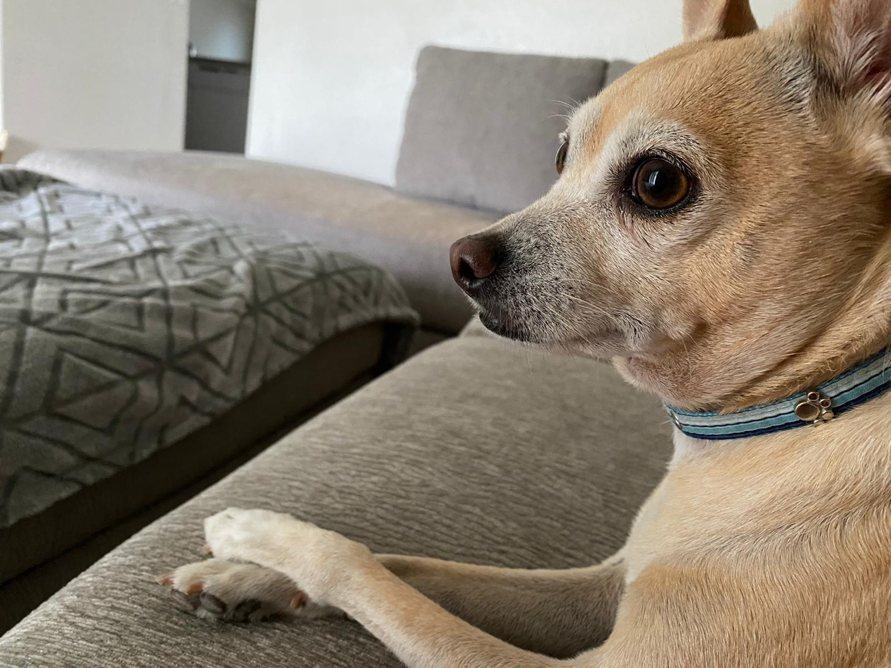
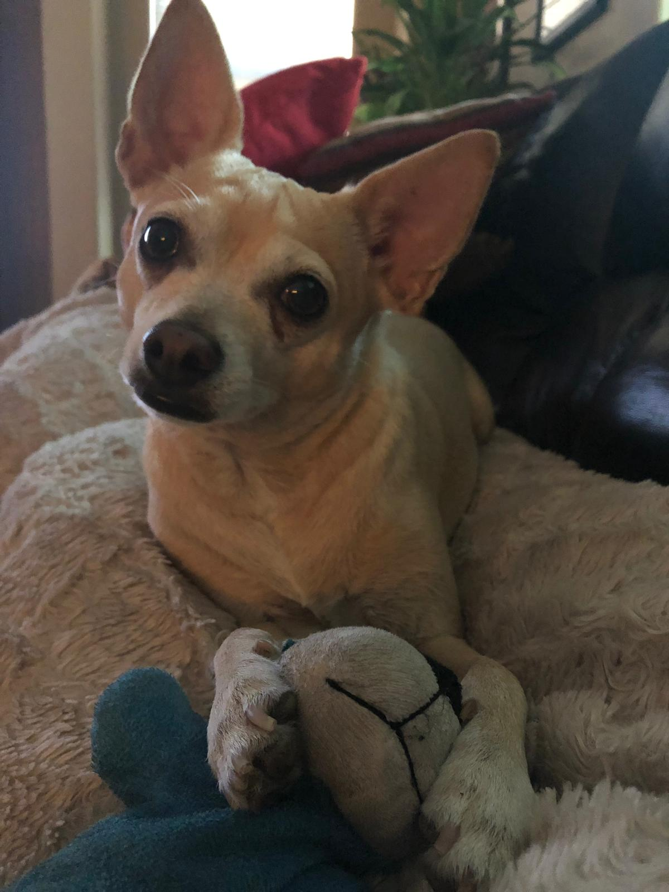
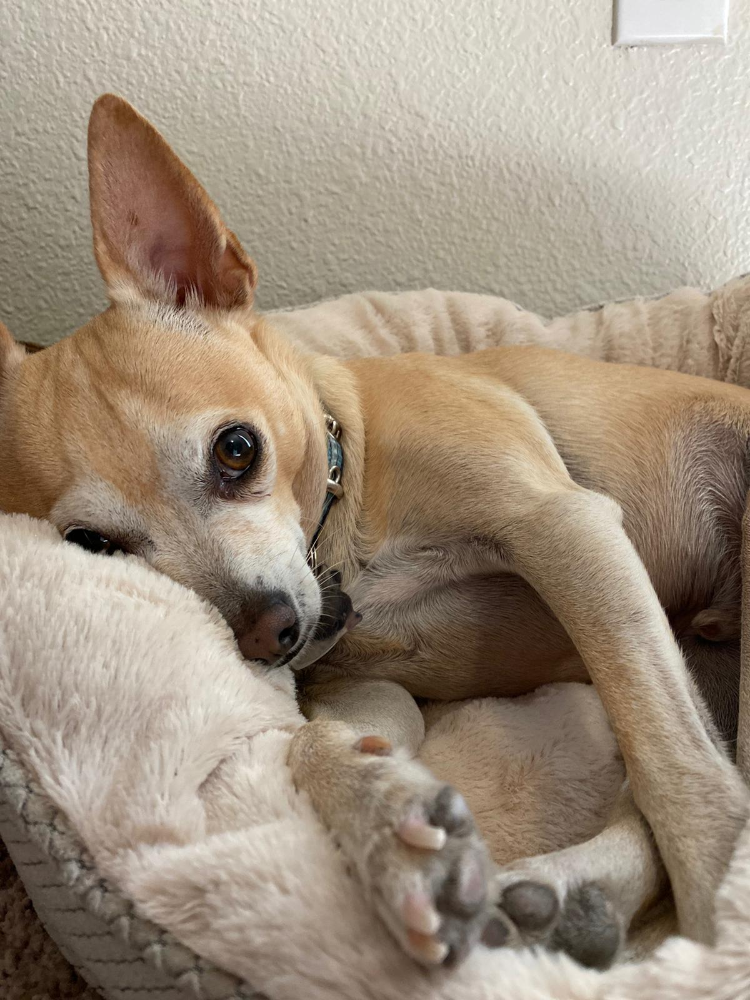
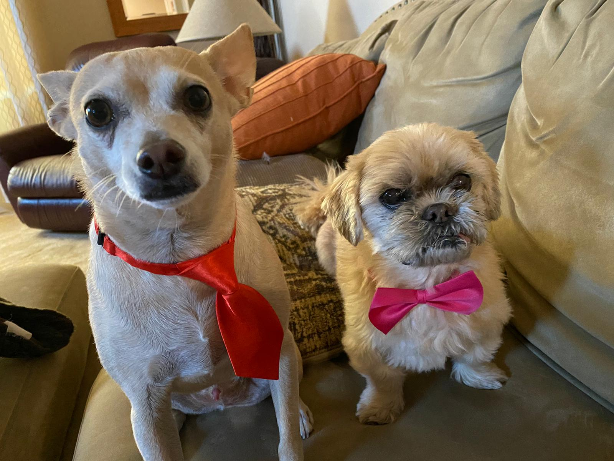
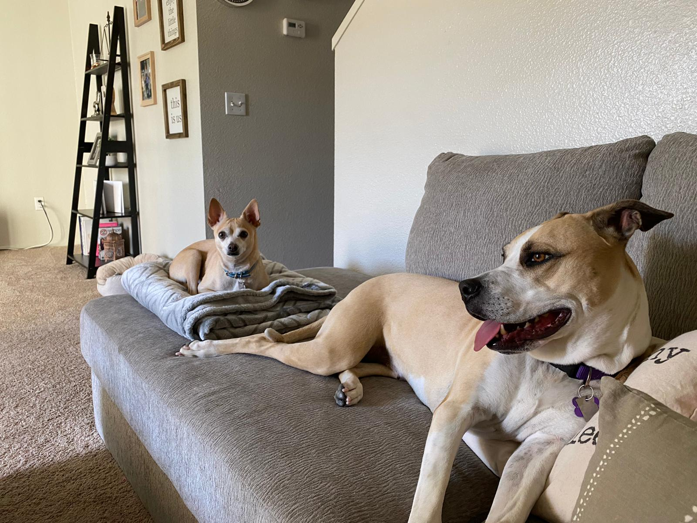
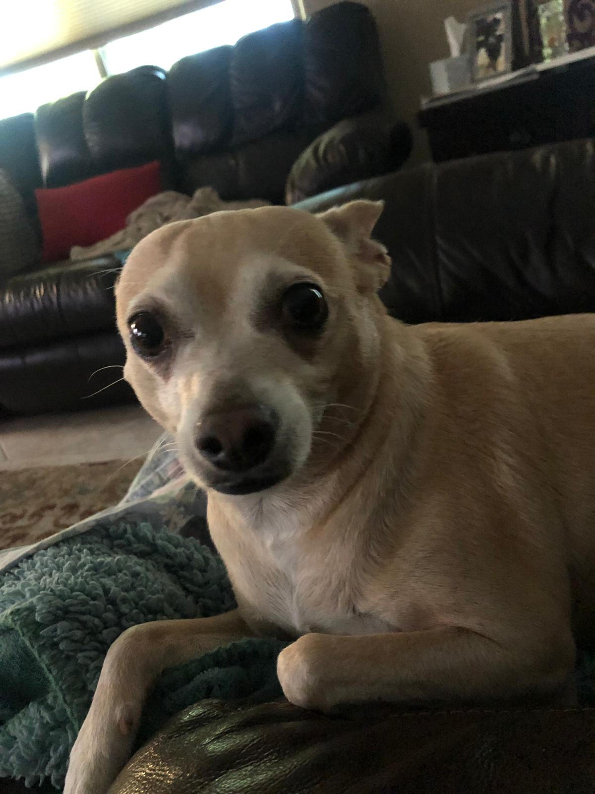

Here are just a few precious pictures of Liam over the years...
Sleepy Liam

Often times in the morning he can be found sleeping in, all nice and tucked in.

One of his favorite activites is to sleep.

So perhaps this is not his best upclose moment.
Model Liam

He often sits very proper, with his paws crossed.

Even when he is playing with his toys he is very cute.

He is sleepy, yet still very much in model mode.
Liam with Other Dogs
The big dog is Nala and the little dog is Niko.

Liam and Niko can clean up nicely

Liam, and his sister Nala, are relaxing on the couch.
Other Pictures of Liam

His guilty face is also very adorable, even if that means he has done something wrong.